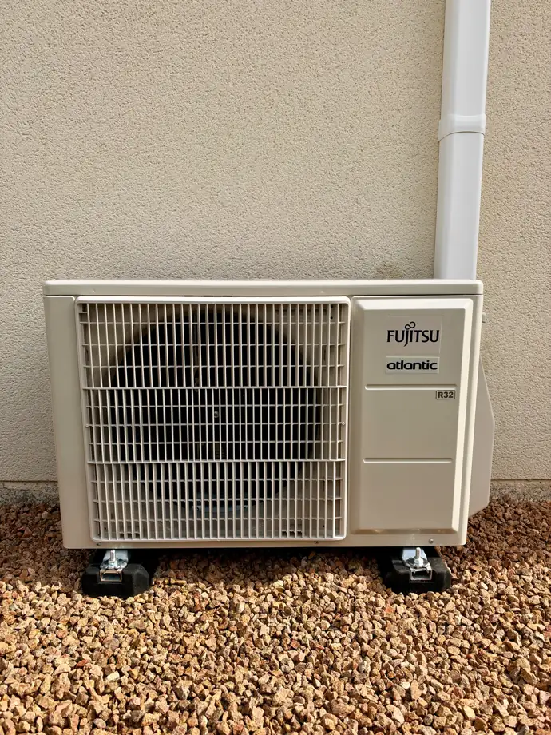
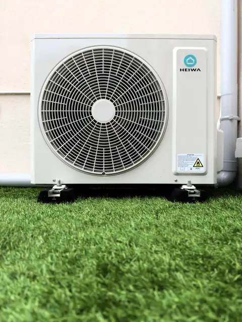

Installation
Fourniture et pose complète en maison ou appartement : climatisation simple ou réversible (pompe à chaleur air-air), du choix de l’appareil à la mise en route
Climatisation · Pompe à chaleur air-air
AERIONCLIMATE
Nos prestations
Je fournis et j’installe votre climatisation ou votre pompe à chaleur air-air de A à Z, ou j’assure la mise en service d’un appareil déjà acheté, dans le respect des normes en vigueur, pour un fonctionnement optimal et durable.
Fourniture et pose complète en maison ou appartement : climatisation simple ou réversible (pompe à chaleur air-air), du choix de l’appareil à la mise en route
Contrôle, réglages et mise en route, y compris pour une clim achetée en kit
Pour une utilisation performante et durable
Nos réalisations


Pourquoi choisir Aerion Climate ?
Une expérience dans l’installation et la mise en service de climatisations
Titulaire de l’attestation de capacité fluides frigorigènes (catégorie I), interventions dans les règles de l’art
Intervention dans toute l’Auvergne et ses environs
Un service à l’écoute de vos besoins
Titulaire de l’attestation de capacité pour la manipulation des fluides frigorigènes (catégorie I) et assuré en responsabilité civile décennale auprès de SMABTP — justificatifs fournis sur demande et sur chaque devis.
Avis clients : voir les avis Google · laisser un avis
Zone d’intervention : Puy-de-Dôme (Clermont-Ferrand, Riom, Issoire, Thiers), Allier (Vichy, Moulins, Montluçon), Cantal (Aurillac, Saint-Flour) et Haute-Loire (Le Puy-en-Velay, Brioude), ainsi que les environs.
Questions fréquentes
C'est l'étape qui suit la pose : contrôle des raccordements et de l'étanchéité du circuit frigorifique, mise en route, vérification du fonctionnement en froid et en chaud, réglages et explications sur l'utilisation de votre appareil. En savoir plus.
Pour une climatisation split, oui : le Code de l'environnement réserve l'assemblage et la mise en service des équipements contenant des fluides frigorigènes aux professionnels titulaires d'une attestation de capacité. La plupart des fabricants l'exigent aussi pour la garantie. Je suis titulaire de cette attestation (catégorie I), justificatif fourni sur demande et sur chaque devis.
Oui. J'installe votre climatisation de A à Z : conseil sur le choix du modèle, fourniture de l'appareil, emplacement et pose des unités intérieure et extérieure, raccordements, puis mise en service et explications sur son utilisation. Si vous avez déjà acheté votre appareil, je peux aussi en assurer uniquement la mise en service.
Oui, des pompes à chaleur air-air : c'est le nom technique d'une climatisation réversible, qui rafraîchit en été et chauffe en hiver. J'en assure la fourniture, la pose et la mise en service. En revanche, je n'installe pas de pompes à chaleur air-eau (celles qui alimentent des radiateurs à eau ou un plancher chauffant). Voir aussi comment bien chauffer avec une clim réversible.
Non. Les aides publiques comme MaPrimeRénov', les primes CEE ou l'éco-prêt à taux zéro sont réservées aux travaux réalisés par une entreprise certifiée RGE. Aerion Climate n'a pas cette certification : mes installations de climatisation et de pompe à chaleur air-air n'ouvrent donc pas droit à ces aides. Je préfère vous le dire dès le départ pour que vous puissiez comparer les devis en connaissance de cause.
Oui. Contactez-moi de préférence avant l'achat pour valider le modèle et l'emplacement des unités, ou dès la livraison pour planifier l'intervention.
Dans toute l'Auvergne : Puy-de-Dôme (Clermont-Ferrand, Riom, Issoire, Thiers), Allier (Vichy, Moulins, Montluçon), Cantal (Aurillac, Saint-Flour) et Haute-Loire (Le Puy-en-Velay, Brioude), ainsi que les environs.
Le tarif dépend du type d'installation (mono-split, multi-split…), de la configuration du logement et du lieu d'intervention. Appelez-moi au 06 65 36 29 46 ou écrivez-moi pour recevoir un devis.
Oui. Pour une climatisation réversible, le fonctionnement est contrôlé en froid et en chaud, avec des conseils de réglage pour l'hiver comme pour l'été. Voir aussi nos conseils pour chauffer avec une clim réversible.
Contact
Décrivez votre projet en quelques lignes : je vous rappelle rapidement pour en parler et, si besoin, passer voir votre logement.
20 Rue Bargoin, 03200 Vichy
Intervention dans toute l’Auvergne et ses environs